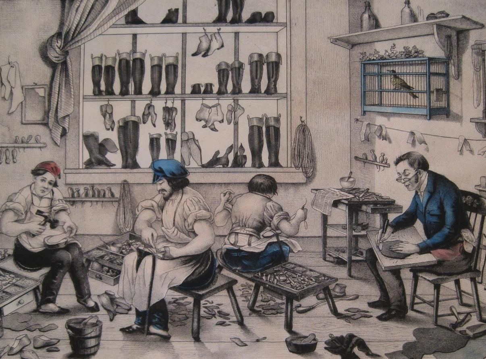

La Rivoluzione Industriale ha segnato un periodo di profondo cambiamento nella produzione e nell'accesso ai beni di consumo. Questo periodo storico, caratterizzato dall'avvento delle macchine e dalla produzione su larga scala nelle fabbriche, ha influenzato notevolmente il modo in cui le persone vivevano la loro vita quotidiana. Prima della Rivoluzione Industriale, la produzione di beni era prevalentemente artigianale, con oggetti realizzati uno per volta da abili artigiani. Tuttavia, con l'introduzione di nuove tecnologie e processi di produzione, si è assistito a un passaggio dalla produzione manuale alla produzione meccanizzata in fabbrica. Questo cambiamento ha portato diversi vantaggi. In primo luogo, la produzione in serie ha reso i beni più accessibili e convenienti per un numero sempre maggiore di persone. Oggetti che un tempo erano considerati di lusso sono diventati più abbordabili per il pubblico generale. Inoltre, la standardizzazione dei processi di produzione ha migliorato la qualità e la consistenza dei beni, garantendo maggiore affidabilità e durata nel tempo. Tuttavia, la Rivoluzione Industriale ha anche sollevato questioni sociali ed economiche. Le condizioni di lavoro nelle fabbriche erano spesso estenuanti, con lunghe ore lavorative e bassi salari. Questo ha portato a tensioni sociali e alla nascita di movimenti per i diritti dei lavoratori, che hanno contribuito a plasmare le politiche lavorative moderne. Nonostante le sfide, i cambiamenti nella produzione dei beni durante la Rivoluzione Industriale hanno avuto un impatto duraturo sulla società. Molti dei principi di produzione di massa e di accessibilità dei beni che sono emersi in quel periodo continuano a influenzare le nostre abitudini di consumo e il modo in cui concepiamo il commercio e l'industria oggi.